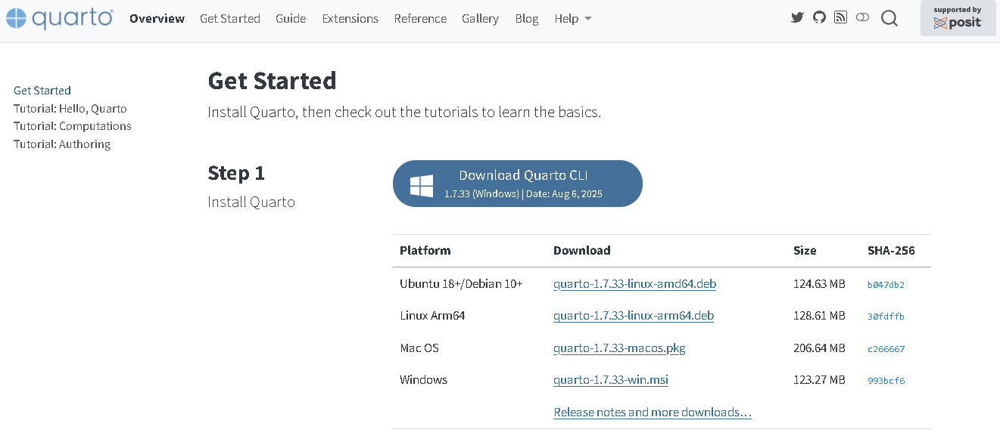
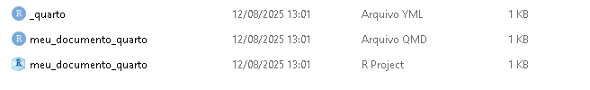
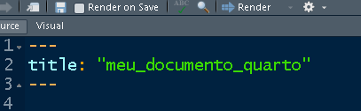
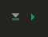

5 CONSTRUINDO APRESENTAÇÕES EM SLIDES COM O quarto
5.1 INTRODUÇÃO DO quarto
O quarto é uma ferramenta moderna e poderosa de publicação de documentos e relatórios, desenvolvida pela equipe da RStudio (agora chamada Posit) no ano de 2022. O quarto permite que você escreva documentos misturando texto, código e resultados — tudo em um só arquivo.
É como escrever um relatório ou apresentação em slides no Word ou Power Point, mas com uma diferença fundamental: os resultados, tabelas, gráficos e análises são gerados automaticamente a partir do código. Isso garante reprodutibilidade, economia de tempo e maior confiabilidade.
Se você já ouviu falar do
R Markdown, criado em 2014, oquartoé sua evolução direta — mais moderno, mais flexível e voltado não só paraR, mas também para outras linguagens comoPythoneJulia.
Markdowné uma forma simples de escrever texto formatado. É muito mais leve que editores de texto tradicionais, e ideal para programadores, cientistas e analistas.
5.1.1 POR QUE APRENDER O quarto?
Há várias razões para usarmos o quarto, especialmente no ensino e na prática de ciência de dados, estatística e análise de dados:
5.1.1.1 REPRODUTIBILIDADE
Você escreve o relatório uma vez, e ele sempre será gerado com os dados e análises atualizados. Isso é essencial em ambientes científicos e corporativos.
5.1.1.2 AUTOMAÇÃO
Se seus dados mudam, você não precisa copiar e colar gráficos ou resultados em outro documento. O quarto atualiza tudo automaticamente com um simples clique.
5.1.1.3 ORGANIZAÇÃO
Código, texto explicativo e visualizações ficam juntos em um único arquivo .qmd. Isso ajuda no aprendizado, na organização dos projetos e na documentação das análises.
5.1.2 FLEXIBILIDADE DE FORMATOS
Com o quarto, você pode gerar:
- Documentos em HTML (para visualização no navegador).
- Relatórios em PDF.
- Relatórios em Word.
- Apresentações em slides (tipo PowerPoint)
- Websites.
- Livros.
- Dashboards.
No formato pdf, por exemplo, para que a renderização funcione corretamente a partir do R no seu computador, é necessário ter uma distribuição LaTeX instalada, como o TinyTeX (recomendada pela RStudio), TeX Live (Linux), MikTeX (Windows) ou MacTeX (macOS). Para instalar o tinytex, compile estes comandos no R:
install.packages("tinytex")
tinytex::install_tinytex()5.1.3 EXEMPLOS DE USO DO quarto
- Alunos: Podem entregar trabalhos com gráficos, análises e textos bem organizados.
- Pesquisadores: Criam artigos científicos e relatórios técnicos com análise de dados atualizável.
- Empresas: Geram dashboards e relatórios automáticos de vendas, produção, RH etc.
5.1.4 O QUE VAMOS VER NESTE MÓDULO?
- Instalação e configuração do
quartonoRStudio. - Construção de um template (modelo) de uma apresentação em slides com texto, código e gráficos.
- Personalização da apresentação: inclusão de tabelas, gráficos e diferentes estilos de slides.
- Geração de apresentação em slides no formato HTML.
Não é preciso ser especialista para usar o
quarto. Se você já sabe escrever código noRe consegue explicar os resultados com suas próprias palavras, então você já tem tudo o que precisa para começar.
A partir de agora, você aprenderá uma das ferramentas mais úteis para transformar análises em documentos bonitos, organizados e profissionais.
5.2 COMO INSTALAR O quarto
Este documento tem como objetivo ensinar passo a passo como instalar o quarto, uma ferramenta moderna para geração de relatórios que une texto, código e resultados em um só lugar.
5.2.1 PRÉ REQUISITOS
Antes de instalar o quarto, certifique-se de que os seguintes componentes estão instalados em seu computador:
- ✅ R (versão 4.0 ou superior)
- ✅ RStudio (versão 2022.07 ou superior)
Verifique a versão do R e RStudio instalado em seu computador antes de instalar o
quarto. Para isso, digiteversionno console ou vá até o menuhelp>about.
5.2.2 INSTALAÇÃO DO quarto
Abra o navegador e vá para:
👉 https://quarto.org/docs/get-started/
Escolha a versão de download de acordo com seu sistema operacional:

Execute o instalador baixado e siga as instruções da tela.
5.2.3 VERIFICAR A INSTALAÇÃO NO RSTUDIO
Depois de instalar o quarto, feche e reabra o RStudio. No console do RStudio, digite:
quarto::quarto_path()Se aparecer um caminho válido, está tudo certo!
5.2.4 E SE APARECER UM ERRO?
Caso o RStudio retorne erro dizendo que a função quarto::quarto_path() não existe, significa que o pacote quarto ainda não está instalado no R. Para instalar o pacote, utilize o seguinte comando:
install.packages("quarto")Depois de instalar o pacote, repita o teste apontado em 5.2.3.
5.3 PASSOS INICIAIS
Tudo começa com o RStudio, que é a nossa interface principal para escrever código, texto e gerar relatórios. Se estiver usando um computador com o quarto já instalado, basta abrir o RStudio normalmente.
Antes de construir sua primeira apresentação em slides, o primeiro passo é criar um projeto. São apenas seis passos simples:
 Referência: https://quarto.org/docs/get-started/
Referência: https://quarto.org/docs/get-started/
Assim, tem-se o nosso projeto e primeiro documento criados. No diretório onde foi alocado o seu projeto, note que foram criados os seguintes arquivos:

- Arquivo
_quarto.yml: Configuração Global- Define configurações do projeto inteiro, como formato de saída, tema, opções de renderização e pastas de destino.
- É um arquivo útil para edição quando você tem vários relatórios que estarão em arquivos separados e você quer manter uma uniformidade entre todos eles.
- Um exemplo da utilização desse arquivo é na construção de livros, onde todos os capítulos devem ter uma mesma padronização.
- Como estaremos interessados na criação de apenas uma apresentação em slides, não iremos modificar este arquivo nesta disciplina.
- Arquivo
meu_documento_quarto.qmd: DocumentoQuarto Markdown- É o arquivo principal onde você escreve seu conteúdo.
- Permite misturar texto em
Markdowne código executável (R, Python, etc.). - Contém um cabeçalho próprio, onde você pode especificar as configurações particulares desse arquivo.
- Arquivo
meu_documento_quarto.Rproj: ProjetoRStudio- Mantém o ambiente de trabalho organizado.
- Define o diretório de trabalho e salva as configurações específicas do projeto.
- Ao abrir o
.Rproj, oRStudioautomaticamente carrega o contexto correto para o seu projeto. - Assim, sempre que for editar o seu projeto, comece abrindo este arquivo.
5.3.1 O ARQUIVO .qmd
No
R, um arquivo.qmdé umQuarto Markdown document— ou seja, um documento feito noQuarto, que é a evolução doR Markdown.
Para entender bem o funcionamento deste arquivo, vamos dividí-lo em três partes:
5.3.1.1 BOTÕES INICIAIS DO QUARTO
Ao trabalhar com um arquivo quarto dentro do RStudio, encontramos alguns botões iniciais que facilitam muito a edição e a produção dos relatórios. Vamos destacar três dos principais:
- Os botões
Source / Visualpermitem alternar entre dois modos de edição:Visual→ mostra o texto como se fosse um editor de texto (mais parecido com Word/Google Docs). No editor visual, você pode tanto usar botões na barra de menu para inserir imagens, tabelas, referências cruzadas, etc. Se você estiver no começo de uma linha, você pode apenas digitar/para usar o atalho.Source→ mostra o código puro emMarkdowneYAML(edição mais “manual”). Enquanto o editor Visual será familiar para aqueles com experiência em escrita com ferramentas como Google docs, o editor Source será familia para aqueles com experiência escrevendo scripts R ou documentos R Markdown. O editor Source também pode ser útil para procurar erros (debugging) de sintaxe Quarto, já que muitas vezes é mais fácil achar esses erros em texto simples.
- O botao
renderé o coração doquarto. Ele executa o arquivo.qmde gera o relatório final no formato que você escolheu no cabeçalho (html,pdf,docxetc.).
Sempre que fizer alterações no documento, clique em
Renderpara ver como ficou o resultado final.
Configurações(engrenagem ao lado do Render): O botão deConfigurações(ícone de engrenagem ao lado dorender) que permite configurar opções específicas de renderização. Inicialmente, será de importância duas configurações básicas:Preview in Viewer Pane→ mostra o relatório dentro do próprioRStudio, na abaViewer.Preview in Window→ abre o relatório em uma janela separada.
As etapas de compilação de um relatório em quarto seguem os seguintes passos:
- O processo de compilação do Quarto começa com o arquivo .qmd, que é o ponto de partida de qualquer documento. Esse arquivo combina texto em Markdown, que permite formatar títulos, listas, links, negrito e itálico, com blocos de código em linguagens como R, Python ou Julia, além de elementos especiais como figuras, tabelas e citações. O cabeçalho YAML, colocado no início do arquivo, define informações importantes como o título do documento e o formato de saída desejado, seja HTML, PDF ou Word.
- Quando o arquivo contém blocos de código, o Quarto utiliza o knitr para executá-los. O knitr roda cada linha de código, captura os resultados e insere esses resultados no documento. Isso inclui valores calculados, tabelas geradas e gráficos produzidos pelo código. Após essa etapa, o documento ainda não está no formato final; ele se transforma em um arquivo intermediário em Markdown, que contém tanto o texto quanto os resultados do código, mantendo a estrutura de formatação básica.
- O próximo passo é a conversão desse Markdown intermediário para o formato final desejado, que é realizada pelo Pandoc. O Pandoc interpreta o Markdown e transforma o documento em HTML, para publicação na web; em PDF; em Word, gerando um arquivo .docx editável; ou em outros formatos, como EPUB, slides ou livros digitais. Durante essa conversão, o Pandoc preserva o texto formatado, os resultados do código, as figuras e as tabelas, garantindo que o documento final tenha aparência profissional.
- Ao final do processo, o usuário obtém um documento final pronto para uso, que combina texto, resultados de código e elementos visuais de forma integrada.
Resumindo todo o fluxo, podemos descrevê-lo assim: o arquivo .qmd é processado pelo knitr, gerando um Markdown intermediário, que é então convertido pelo Pandoc para produzir o documento final no formato desejado, conforme a figura a seguir:

5.3.1.2 CABEÇALHO yaml
O yaml (pronuncia-se “ié-mel” ou “yá-mel”) é uma linguagem de marcação usada para descrever configurações de forma simples, legível e organizada. É a parte entre as linhas com três hifens no início do arquivo:

Esse cabeçalho diz como o documento será produzido: título, autor, formato, tema, sumário, numeração etc. Isto é, são as especificações do seu relatório. Os comandos escritos entre essas linhas não aparecem como texto no relatório final (com algumas exceções, como o título e o autor).
Os comandos do cabeçalho são baseados em pares chave-valor
Cada linha deverá seguir o formato:
chave1: valor1
chave2: valor2Por exemplo, title é a chave, e "meu_documento_quarto" é o valor.
Para construir apresentações em slides no quarto, usamos o Reveal.js, um framework de apresentações em HTML que permite criar slides modernos, interativos e altamente personalizáveis a partir de um único arquivo .qmd. Assim, para esta aula, utilizaremos o formato format : revealjs.
Além disso, os comandos descritos nesse cabeçalho são sensíveis à indentação, isto é, quando uma chave tem opções internas, é preciso usar “espaços” antes. Exemplo:
format:
revealjs:
slide-number: true
incremental: falseNo caso desse exemplo, format é a chave principal e revealjs está um nível abaixo. O comando slide-number (numeração) e incremental estão dentro de revealjs.
Para o nosso template, renderize o seguinte comando em seu cabeçalho yaml (entre os hífens)
title: "**PRÁTICA ESTATÍSTICA II**"
subtitle: "**ATIVIDADE AVALIATIVA 1**"
author: "Nome1 (<seuemail@id.uff.br>) <br> Nome2 (<seuemail@id.uff.br>)"
date: today
date-format: "DD/MM/YYYY"
institute: "Universidade Federal Fluminense"
format:
revealjs:
css: custom.css
slide-number: true
incremental: false
transition: slide
background-transition: fade
width: 1280
height: 720
margin: 0.07
auto-stretch: false
title-slide-attributes:
data-background-image: "Capa.png"
data-background-size: covertitle
Define o título principal da apresentação. Ele aparece no slide de abertura e também pode ser usado como metadado do documento.- Normalmente é um texto simples.
- Também pode incluir formatação em Markdown, como negrito ou itálico.
- Normalmente é um texto simples.
subtitle
Define um subtítulo, exibido logo abaixo do título no slide inicial.- Pode ser omitido se não houver subtítulo.
author
Indica o(s) autor(es) do documento.- Pode ser um único autor:
author: "Nome"
- Também pode ser uma lista de autores.
- O comando
<br>é HTML e serve para quebra de linha.
- Pode ser um único autor:
date
Define a data exibida no slide de título.
Algumas opções comuns são:today→ mostra automaticamente a data atual da compilação
"2026-03-09"→ data escrita manualmente
"9 de março de 2026"→ data em formato textual personalizado
date-format
Define como a data será exibida quando se usa uma data automática.
Alguns formatos comuns são:"DD/MM/YYYY"→ exemplo:09/03/2026
"YYYY-MM-DD"→ padrão internacional (2026-03-09)
"D MMMM YYYY"→ exemplo:9 março 2026
institute
Define a instituição associada ao(s) autor(es).- Pode ser texto simples.
- Também pode ser uma lista de instituições se houver múltiplos autores com diferentes vínculos.
- Pode ser texto simples.
format
Define o tipo de documento que será gerado.
Algumas opções comuns são:revealjs→ apresentação em slides HTML
html→ página HTML comum
pdf→ documento PDF
docx→ documento Word
dashboard→ dashboards interativos
css
Permite adicionar um arquivo CSS personalizado para alterar o estilo da apresentação.
Exemplos:css: custom.css→ aplica um único arquivo CSS
- também podem ser usados vários arquivos CSS.
Nesse arquivo é possível modificar cores, fontes e tamanhos.
slide-number
Controla a exibição do número do slide.
Opções comuns:true→ mostra o número do slide
false→ não mostra
incremental
Define se itens de listas aparecem gradualmente durante a apresentação.
Opções:true→ cada item aparece um de cada vez
false→ todos aparecem simultaneamente
transition
Define o tipo de transição entre slides.
Opções comuns:slide
fade
convex
concave
zoom
none
background-transition
Define o tipo de transição aplicada ao fundo dos slides.
Opções comuns:fade
slide
convex
concave
zoom
none
width
Define a largura da área do slide em pixels.
Valores comuns:960(padrão antigo do Reveal.js)
1280(muito usado para telas widescreen)
height
Define a altura da área do slide em pixels.
Valores comuns:700
720
margin
Define a margem ao redor do conteúdo do slide (proporção da tela).
Valores típicos:0.05
0.07
0.1
Valores menores fazem o conteúdo ocupar mais espaço.
auto-stretch: Coloquefalsepara você ter o controle do tamanho e posição das imagens.title-slide-attributes
Permite adicionar atributos específicos ao slide de título, geralmente para personalização visual.data-background-image
Define uma imagem de fundo para o slide de capa.
Pode ser:- uma imagem local (
capa.png)
- uma URL de imagem online
- uma imagem local (
data-background-size
Define como a imagem de fundo será ajustada ao slide.
Opções comuns:cover→ cobre todo o slide
contain→ ajusta mantendo toda a imagem visível
- valores específicos como
100%ou50%
data-background-opacity
Define a transparência da imagem de fundo.
Normalmente usa valores entre:0→ totalmente transparente
1→ totalmente opaco
Exemplos comuns:0.2,0.4,0.6.
5.3.1.3 CORPO DOS SLIDES
Depois do cabeçalho yaml, vem o corpo do texto. É aqui que você realmente escreve o conteúdo da sua apresentação em slides: explicações, análises, interpretações e conclusões.
Algumas características importantes do corpo do texto:
- É escrito em Markdown, uma linguagem simples e leve de formatação.
- Você pode misturar texto corrido com figuras, tabelas e, se quiser, código executável.
- Diferente de um texto comum, aqui você pode integrar dados, gráficos e análises diretamente no relatório.
5.4 CORPO DOS SLIDES
5.4.1 ÊNFASES E DESTAQUES
Este recurso serve para chamar atenção para partes importantes do texto, tornando-o mais legível e organizado. As principais formas de destaque são:
- *Itálico* → usado para termos técnicos, estrangeirismos
ou palavras que você quer realçar levemente.
- **Negrito** → usado para conceitos fundamentais ou
ideias que devem ser fixadas.
- ~~tachado~~ → serve principalmente para indicar que algo
foi removido, alterado ou corrigido.
- `comandos` → serve para colocar nomes de funções e/ou
comandos de alguma linguagem de programação.5.4.2 CAPÍTULOS E SEÇÕES (SLIDES)
Eles organizam o conteúdo em diferentes níveis hierárquicos, ajudando a guiar a leitura.
#→ Capítulo##→ Seção
📌 Exemplo: Compile o seguinte código na sua apresentação:
# Introdução
Este é o início do texto.
## Motivação
Aqui explicamos por que o tema é importante.
## Revisão Bibliográfica
Aqui é feita uma revisão bibliográficaNote que um slide inteiro é reservado ao capítulo e cada seção inicia um slide diferente.
Para o nosso template, acrescente cada capítulo e seção com a seguinte estrutura:
# **PRIMEIRO CAPÍTULO**{data-background-image="Capa.png" style="text-align:center"}
## **PRIMEIRA SEÇÃO**No capítulo, as chaves indicam um conjunto de atributos aplicados ao título ou ao slide. Esses atributos permitem configurar aparência ou comportamento do slide:
data-background-image="Capa.png"
Define uma imagem de fundo para este slide específico."Capa.png"é o nome do arquivo da imagem.
- O arquivo deve estar na mesma pasta do documento ou no caminho especificado.
style="text-align:center"
Aplica estilo CSS diretamente ao slide ou ao elemento.
Neste caso:text-align:center→ centraliza horizontalmente o texto do slide.
5.4.3 CAIXAS
No quarto, caixas como box-blue, box-green, box-orange ou box-purple são divisões de conteúdo estilizadas usadas para destacar partes importantes do texto ou da apresentação.
Suas principais características são
Todo bloco começa com
:::e termina com:::Estrutura de bloco
Esses elementos criam uma região visual separada dentro do documento ou dos slides.Estilização via CSS
A aparência (cor de fundo, borda, espaçamento, tipografia etc.) é definida em um arquivo de estilos, comocustom.css.Organização didática do conteúdo
São usados para destacar partes específicas como:- definições
- exemplos
- observações
- interpretações
- exercícios
- alertas ou avisos
- você pode usar em todos os slides!
- definições
Semântica visual
A cor da caixa pode representar tipos diferentes de informação, facilitando a leitura e a compreensão do material.
Acrescente no seu template o seguinte slide:
## **BLOCOS**
::: box-blue
Este é um bloco azul.
:::
::: box-green
Este é um bloco verde.
:::
::: box-purple
**TÍTULO OPCIONAL**
Este é um bloco roxo.
:::
::: box-orange
Este é um bloco laranja.
:::5.4.4 LISTAS
As listas são ferramentas essenciais para organizar informações, tornar o texto mais legível e guiar o leitor. No quarto, temos diferentes tipos de listas e maneiras de destacar itens.
5.4.4.1 LISTAS NÃO ORDENADAS
Usam -, * ou + para cada item.
São ideais para tópicos que não têm ordem específica.
📌 Exemplo: Compile o seguinte código no seu template:
## **LISTA NÃO ORDENADA**
::: box-blue
- Estatística
- Matemática
- Programação
:::📌 Exemplo: Para listas aninhadas, compile o seguinte código no seu template:
## **LISTA NÃO ORDENADA ANINHADA**
- Frutas
- Maçã
- Banana
- Verduras
- Alface
- CenouraDICA: Use dois “tab” para fazer as listas aninhadas.
5.4.4.2 LISTAS ORDENADAS
Usam 1., 2., 3. e são úteis quando a ordem importa (passo a passo).
📌 Exemplo: Compile o seguinte código no seu relatório:
## LISTA ORDENADA
:::box-orange
1. Coletar dados
2. Organizar informações
3. Aplicar análise estatística
:::📌 Exemplo: Para listas ordenadas com subníveis, compile o seguinte código no seu template:
## **LISTA ORDENADA ANINHADA**
1. Preparação
1. Coletar materiais
2. Definir objetivos
2. ExecuçãoDICA: Use dois “tab” para fazer as listas aninhadas.
5.4.4.3 LISTAS DE TAREFAS
No quarto é possível criar checklists, útil para planos de ação.
📌 Exemplo: Compile o seguinte código no seu template:
## **LISTA DE TAREFAS**
::: box-purple
- [x] Comprar leite
- [ ] Estudar Quarto
- [ ] Enviar relatório
:::5.4.5 LINKS
Os links permitem conectar seu texto a outras fontes, aumentando a utilidade do material.
📌 Exemplo: Compile o seguinte código no seu template:
## **LINKS**
Confira a documentação oficial do [Quarto](https://quarto.org).5.4.6 EQUAÇÕES
As equações são escritas com a sintaxe do LaTeX, que é uma linguagem de marcação para documentos científicos, muito usada em matemática, estatística, física e engenharia. Podem estar no fluxo do texto ou em blocos destacados.
- Para fazer equações dentro do texto, use somente um cifrão
$. - Para fazer equações de destaque, use dois cifrões
$$.
📌 Exemplo: Compile o seguinte código no seu template para criar equações:
## **EQUAÇÕES**
A reta é descrita por $y = mx + b$.
Segue uma equação de destaque:
$$
y = \frac{-b \pm \sqrt{b^2 - 4ac}}{2a}
$$
Mais exemplos:
* Frações: $\frac{a}{b}$
* Raiz quadrada: $\sqrt{x}$
* Expoentes: $x^2$
* Índices: $x_i$
* Somatórios: $\sum_{i=1}^{n} x_i$ As equações em destaque são visualisadas no próprio código do relatório para que o(a) programador(a) tenha uma prévia do que será compilado
Para criar equações em latex você pode usar o site codegos.
5.4.7 FIGURAS E TABELAS
Depois de estruturarmos o texto, uma parte essencial na construção de documentos científicos, relatórios e apostilas é a apresentação de figuras e tabelas. Esses elementos tornam o conteúdo mais claro e visual, além de servirem como referência para os leitores.
No quarto, inserir imagens e tabelas simples é tão fácil quanto trabalhar com texto. Não é necessário código em R para isso — basta utilizar a sintaxe do Markdown.
5.4.7.1 FIGURAS
As figuras ajudam a ilustrar conceitos, mostrar resultados visuais e enriquecer a leitura.
📌 Sintaxe básica para inserir uma imagem:
Se a sua figura já está na mesma pasta do projeto, basta colocar o nome do arquivo dentro do parenteses.
Se a sua figura estiver dentro de uma pasta chamada
imagens, por exemplo, basta colocarimagens/nome_do_arquivodentro do parenteses.
📌 Exemplo: Para anexar a imagem com o nome Rstudio.png, compile o seguinte código:
## **IMAGENS**
Após o parenteses, há algumas opções comuns para editar sua imagem que deverão ser escritas entre chaves:
fig-align="center"→ centraliza a imagemfig-align="left"→ alinha à esquerdafig-align="right"→ alinha à direitawidth=50%→ ajusta a largura da imagem em relação à página
Exemplo:
📌 Exemplo: Compile o seguinte código para aplicar alguns dos comandos acima:
## **IMAGENS COM EDIÇÕES**
{fig-align="center" width=100%}5.4.7.2 TABELAS
As tabelas servem para organizar informações de forma clara e resumida. No Quarto, é possível criar tabelas apenas com Markdown, sem precisar de pacotes adicionais. Compile o seguinte exemplo básico em seu template:
## **TABELAS**
| Disciplina | Professor | Horário |
|----------------|-----------------|-----------|
| Estatística | Prof. Guilherme | 08h-10h |
| Matemática | Prof. Ana | 10h-12h |
| Programação | Prof. João | 14h-16h |No Markdown, podemos controlar o alinhamento das colunas usando os dois-pontos:
📌 Exemplo Compile o seguinte código em seu template:
| Produto | Preço | Quantidade |
|:--------|------:|:----------:|
| Lápis | 1.50 | 10 |
| Caderno | 12.00 | 5 |
| Mochila | 75.00 | 1 |DICA 1: O
quartoentende tabelas emMarkdown. Então basta colar sua tabela do Excel em um conversor. Um conversor bem útil é o TableTex
DICA 2: Para saídas em HTML, pacotes como
kableExtranoRconstroem tabelas bem formatadas.
DICA 3: Exitem também tabelas específicas para trabalhos cienfíticos que podem ser geradas pelos pacotes
gtsummaryoutableone. Essas tabelas não são puramente textuais e já incorporam resumos descritivos e outros resultados estatísticos.
5.4.8 ABAS
No Revealjs, o panel-tabset é um recurso que permite organizar conteúdo em abas (tabs) dentro de um mesmo slide.
Ou seja, em vez de criar vários slides, você cria um único slide com várias abas clicáveis, e cada aba mostra um conteúdo diferente.
Compile o seguinte código no seu template:
## **SLIDE COM ABAS**
::: {.panel-tabset}
### Aba 1
Conteúdo da primeira aba.
### Aba 2
Conteúdo da segunda aba.
### Aba 3
Conteúdo da terceira aba.
:::Note que:
- É utilizado novamente o comando
:::. - O comando
###dá título a cada aba.
5.4.9 COLUNAS
No Quarto, o ambiente de colunas (columns) permite dividir um slide ou uma página em duas ou mais colunas, organizando o conteúdo lado a lado. Esse recurso é muito usado em apresentações feitas com Reveal.js.
A ideia é semelhante a um jornal: em vez de colocar tudo em sequência vertical, você pode separar o conteúdo horizontalmente, facilitando comparações entre textos, gráficos, imagens ou tabelas.
Compile o seguinte código em seu template:
## Exemplo de colunas
:::: columns
::: {.column width="60%"}
- Esta é a primeira coluna
- Ela ocupa **60% da largura**
:::
::: {.column width="40%"}
- Esta é a segunda coluna
- Ela ocupa **40% da largura**
:::
::::Note que:
- É importante que todas as colunas somem 100% da largura.
- Você pode criar uma coluna em “branco” se quiser espaço entre suas colunas.
- Veja o encadeamento do comando
:::. Os mais externos vão ficando maiores
5.4.10 SCROLLING
Se você vai apresentar um conteúdo muito grande (verticalmente) em seu slide, você pode recorrer ao scrolling para ajustar uma barra de rolagem.
Veja este exemplo:
## *SCROLLING* {.scrollable}
Este slide demonstra o uso da classe **scrollable**, que permite adicionar **rolagem vertical** quando o conteúdo é muito grande.
### Seção 1
Este é um exemplo de texto genérico utilizado apenas para preencher o slide e demonstrar como o conteúdo pode ultrapassar a altura da tela.
- Item 1
- Item 2
- Item 3
- Item 4
- Item 5
### Seção 2
Quando há muito conteúdo, o slide normalmente ficaria visualmente sobrecarregado. Com o uso de `scrollable`, é possível manter tudo em um único slide e permitir que o usuário role o conteúdo.
- Item A
- Item B
- Item C
- Item D
- Item E5.5 INCORPORANDO CÓDIGOS E RESULTADOS
Um dos grandes diferenciais do quarto é a possibilidade de inserir códigos de programação diretamente no documento. Esses blocos são chamados de chunks. Com os chunks, podemos escrever código, executá-lo e mostrar seus resultados (como tabelas, gráficos e cálculos) no mesmo lugar em que construímos o texto. Isso facilita a integração entre explicação teórica e prática.
5.5.1 CRIANDO UM CHUNK
Um chunk é iniciado e finalizado por três crases. Dentro da abertura colocamos {linguagem}, indicando em qual linguagem vamos programar.
📌 Exemplo: Compile o seguinte código no seu template para gerar um código R e seu resultado:
## **CRIANDO UMA CHUNK**
```{r}
x <- 1:10
hist(x)
```O
quartoreconhece várias linguagens: R, Python, Julia, Bash etc.
Note os seguintes botões no código do seu relatório:

Eles permitem que você rode o R “normalmente” a partir do seu código (como em um script normal), sem ter que compilar o relatório pra ver o resultado. O primeiro botão roda todos os chunks anteriores ao atual e o segundo roda somente o chunk atual.
Nas configurações, você pode determinar que a saída do código apareça apenas no console com a opção
chunk outuput in console.
5.5.2 OPÇÕES DE EXECUÇÃO
Por padrão, os chunks em apresentação de slides exibem apenas o resiltado. Entretanto, os chunks têm diversas opções de controle que permitem personalizar o que será exibido no documento final:
{r, echo=TRUE}- Executa o código mostrando o código e o resultado no documento.
{r, eval=FALSE}- Não executa o código, apenas exibe o código no documento.
{r, include=FALSE}- Executa o código, mas não mostra nem o código nem o resultado no documento.
{r, warning=FALSE}- Oculta avisos (warnings) gerados durante a execução do código.
{r, message=FALSE}- Oculta mensagens (messages) exibidas durante a execução do código.
5.5.3 NOMEANDO CHUNKS
Cada chunk pode ter um nome, o que ajuda na organização e no rastreamento de erros. Para dar um nome ao seu chunk escreva o nome após a letra r.
📌 Exemplo: Compile o seguinte código no seu template:
## CHUNK COM NOME
```{r media_dados}
valores <- c(5, 10, 15)
mean(valores)
```É possível navegar mais facilmente para blocos de código específicos usando o navegador em lista no canto inferior esquerdo do editor do script.
5.5.4 OUTRAS OPÇÕES ÚTEIS
- fig.width e fig.height → controlam tamanho de gráficos.
- cache=TRUE → guarda resultados para não precisar recalcular em cada renderização.
- fig.pos → Controla a posição da figura.
fig-pos="h"→ tenta colocar a figura aqui (here).
fig-pos="H"→ coloca a figura exatamente aqui (precisa do pacotefloat).
fig-pos="t"→ coloca a figura no topo da página.
fig-pos="b"→ coloca a figura no rodapé da página.
fig-pos="p"→ coloca a figura em uma página separada só de floats (figuras/tabelas).fig-pos="!h"→ força a figura a ficar aqui, mesmo contra as preferências do LaTeX.
Para finalizar, vamos ver um exemplo com gráfico.
📌 Exemplo: Compile o seguinte código no seu template:
## **CHUNK PERSONALIZADA**
```{r, fig.width=5, fig.height=4}
hist(rnorm(100), col="skyblue", main="Histograma")
```